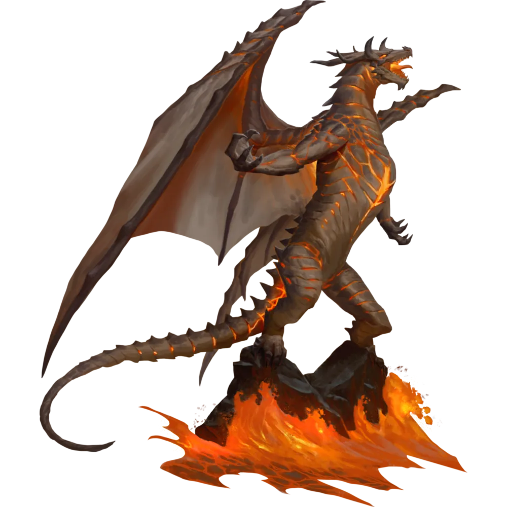

各年龄段数据卡
全熟焦香对大多数岩浆龙而言，根本不存在“烤过头”这回事。任何美味的食物只要裹上一层厚厚的焦炭壳，或者干脆架在滚烫的岩浆与熔岩上方炙烤，滋味都会更上一层楼。有些岩浆龙甚至发明了一种独特的烹饪技法：先用滚烫的岩浆将食材严严实实地包裹起来，静待外壳冷却凝固成坚硬的岩石后，再像敲鸡蛋一样把石壳敲开，露出里面通体烤得焦脆如炭的佳肴――在岩浆龙看来，这才是无可挑剔的至高美味。 岩浆龙最初源自火元素位面，是性情悍勇、凶猛暴烈的生物；如今已有许多岩浆龙涉足凡世，以追寻更广阔、更优渥的机遇。 岩浆龙固然崇尚暴力，却又极难捉摸，这意味着外人很难判断它们究竟会在何时、以何种方式发起攻击。倘若它们对每一个踏入领地的不速之客都一视同仁地大打出手，或是四处游荡寻找新的挑战者，那至少还算有迹可循。然而事实并非如此：它们大多过着独居生活，期间不时夹杂着突如其来的极端暴力爆发――这倒不是因为它们生性害羞或孤僻避世，纯粹是因为面对典型的岩浆龙这般情绪极不稳定、喜怒无常的存在，其他生物实在不敢轻易靠近。 这并不是说岩浆龙是以折磨弱者或加害他人为乐的残虐生物。恰恰相反，岩浆龙觉得自己每一次暴烈的情绪喷发背后都有着确凿充分的理由――尽管平时根本没人敢去向岩浆龙追问理由就是了。不过这也意味着，岩浆龙其实相当善于内省，能够条分缕析地审视自己变幻无常、起伏跌宕的心绪，以此为自己的感受与行为作出解释。 暴烈火山巢穴尽管岩浆龙并非工于心计的反派恶枭，但它们盘踞的火山巢穴往往连最狂热的反派大魔王见了都会垂涎三尺。正因如此，岩浆龙有时会与那些痴迷于老套反派排场、企图把当地火山据为己有的真正恶棍爆发领地争端。相比之下，栖居于地底深处岩浆奔涌之地的岩浆龙其实更偏爱清静独处。 岩浆龙诉诸暴力也并非全然出于火山喷发般的暴脾气，有时同样服务于务实的目的――例如在其他岩浆龙面前确立支配地位、震慑击退来犯之敌，或是捍卫自己的领地。 当不在火元素位面时，岩浆龙往往栖息于火山活跃地带，尤其是活火山内部，或是比绝大多数其他地下区域还要幽深得多的地底岩浆层中。由于栖息环境极其严酷恶劣，岩浆龙必须精挑细选存入宝库的财宝，否则骇人的高温很可能会将它们的战利品付之一炬。 暴力即是答案每当怒火如火山般喷薄而出时，岩浆龙便觉得唯有暴力才是释放体内积压怒气的最佳――甚至可能是唯一――途径。年幼的岩浆龙发泄起来或许只是一场小打小闹，好似溅起一星半点熔岩火花；而太古岩浆龙一旦暴怒发作，便足以酿成毁天灭地的浩劫灾难。 这种对暴力的渴求并非源于对他人的仇恨或宿怨，也并非出于残忍嗜虐、乐见众生痛苦挣扎的心理。恰恰相反，暴力宣泄本身带来的畅快淋漓便是岩浆龙追求的全部回报，任何波及无辜者的附带伤害都只是不幸的意外后果，绝非蓄意为之。随着年岁渐长，当暴怒发作造成的附带破坏变得尤为惨重时，有些岩浆龙也会产生几分自觉，尝试为自己的所作所为辩解――毕竟它们总能为当时的心情以及为何选择那条暴力宣泄之路找出一套说辞。受害者及其亲友固然极少会被这些辩解说服，但敢于把这份不满当面捅到巨龙眼前的勇士，那就更加凤毛麟角了。 太古岩浆龙哪怕以其他巨龙的标准来衡量，岩浆龙也称得上暴烈、鲁莽而悍不畏死。正因如此，它们是所有巨龙中极少数最难活到晋升太古龙阶段的族群之一。诚然，它们是战力强横、怒火与韧性皆举世无双的斗士，但只需一次失手或一遭霉运当头，便足以断送一生的辉煌战绩。于是，在熬到晋升太古龙所需的漫长寿数之前，绝大多数岩浆龙早已在一场轰轰烈烈的绚烂爆发中落幕陨落了。 要想在长达一千年的岁月里每年经历数百场生死搏杀却始终立于不败之地，单靠寻常程度的好运气是远远不够的。就算一条巨龙在每一场战斗中的胜率都高达百分之九十九点九九，历经一百万场恶战后全胜生还的概率实际上也趋近于零（若有好事者感兴趣，这一概率不足一正分之一――那是一个一后面跟着四十二个零的庞大数字，大到除了精研算学的学者外几乎无人听闻）。然而在一个充满魔法的世界里，气运既可以凭自己的利爪主动攫取，也可以由垂青于它的超凡伟力存在所赐予；从这个角度来看，活下来的胜算倒也远非天方夜谭。 何物可耐岩浆？困扰岩浆龙的永恒难题，在于如何搜集经得起巢穴高温炙烤的财宝――根据火山的具体地质构造以及巢穴深入火口的程度，巢穴内的温度通常高达1,300至2,400华氏度。不消说，这让聚敛财宝变得棘手无比。白银、黄铜、青铜、赤铜与黄金的熔点介于1,600至2,000华氏度之间，尚可在火山温度较低的外围区域幸存；而熟铁、精钢与铂金则足以扛住更高温度，哪怕巢穴地处火山最酷热的深处也不至于熔化成水。 对岩浆龙而言，“精明审慎”可以体现在许多截然不同的方面。或许它只是单纯比大多数同类少挑起几场争斗；或许它打架的频率与寻常同类无异，却只挑选自己已有十成把握必胜的战斗；又或许它从不盲目假定自己稳操胜券，而是总作最坏打算，每次踏入战场前都预先备好万一局势崩盘时的保命脱身之策。无论一条岩浆龙究竟如何克制收敛，更值得探究的问题其实是“为什么”。尽管天性暴烈，岩浆龙也并非铁板一块的单一群体，哪怕在这群以好勇斗狠著称的血脉之中，也依然存在性情相对沉稳平和的个体――只不过这种脾性通常源于年少时的某段特殊经历，极为罕见。当然，其他岩浆龙或许并不乐见本族巅峰强者的席位竟被这群“异类怪胎”占据了大半；结果反倒导致那些更为审慎克制的太古岩浆龙，往往会收到比寻常更多的、来自年轻气盛岩浆龙的决斗挑战。 在构成太古岩浆龙行列的三类个体之中，传奇色彩最浓厚的或许当属那些纯粹实力强横到不讲道理、且打从年幼时起便一路横扫无敌的存在。它们往往顶着诸如“不可征服者”或“无敌者”之类的响亮名号，一辈子都在近乎明目张胆地招引其他岩浆龙上门挑战霸权，却又凭借超乎常理的绝对力量屡战屡胜。这样的太古岩浆龙甚至可能拥有超越常规数据卡所呈现实力上限的等级与威能，以此彰显其凌驾于寻常太古岩浆龙之上的非凡战力――但即便如此，它们多半也仍需几分气运或审慎，方能一路存活至今日的巅峰高度。 岩浆难道不是岩石吗？既然岩浆本质上是极度炽热熔融的岩石，按理说岩浆龙似乎应当同时兼具土与火双重元素属性才对；至于它们为何纯粹属于火元素巨龙，至今没人说得清确切缘由。曾有一位好奇心旺盛的学者试图向几条年长博学的岩浆龙当面请教它们是否知晓原因，结果却发现，刨根问底地质疑其元素本源身份是一件极其惹恼岩浆龙的事――而惹恼一条脾气暴烈、威能滔天的巨龙，显然绝非通往长命百岁的明智之道。如今，研习龙类学的学子们都将那位学者的遭遇奉为前车之鉴，老老实实地接受“岩浆龙就是火元素巨龙”这一事实……再也没必要深究这个话题了！ |
 岩浆龙 |